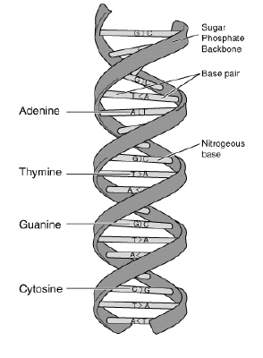

Figure 1.
DNA (Deoxyribonucleic Acid) is the molecule which contains the genetic instructions. It consists of four different nucleotides, namely Adenine, Thymine, Guanine, and Cytosine as shown in Figure 1. If we represent a nucleotide by its initial character, a DNA strand can be regarded as a long string (sequence of characters) consisting of the four characters A, T, G, and C. For example, assume we are given some part of a DNA strand which is composed of the following sequence of nucleotides:
``Thymine-Adenine-Adenine-Cytosine-Thymine-Guanine-Cytosine-Cytosine-Guanine-Adenine-Thymine"
Then we can represent the above DNA strand with the string ``TAACTGCCGAT."
The biologist Prof. Ahn found that a gene X commonly exists in the DNA strands of five different kinds of animals, namely dogs, cats, horses, cows, and monkeys. He also discovered that the DNA sequences of the gene X from each animal were very alike. See Figure 2.
| DNA sequence of gene X |
|
Cat: | GCATATGGCTGTGCA |
|
Dog: | GCAAATGGCTGTGCA |
|
Horse: | GCTAATGGGTGTCCA |
|
Cow: | GCAAATGGCTGTGCA |
|
Monkey: | GCAAATCGGTGAGCA |
Figure 2. DNA sequences of gene X in five animals.
Prof. Ahn thought that humans might also have the gene X and decided to search for the DNA sequence of X in human DNA. However, before searching, he should define a representative DNA sequence of gene X because its sequences are not exactly the same in the DNA of the five animals. He decided to use the Hamming distance to define the representative sequence.
The Hamming distance is the number of different characters at each position from two strings of equal length.
For example, assume we are given the two strings ``AGCAT" and ``GGAAT." The Hamming distance of these two strings is 2 because the 1st and the 3rd characters of the two strings are different. Using the Hamming distance, we can define a representative string for a set of multiple strings of equal length. Given a set of strings
S = s1,..., sm
of length n
, the consensus error between a string y
of length n
and the set S
is the sum of the Hamming distances between y
and each si
in S
. If the consensus error between y
and S
is the minimum among all possible strings y
of length n
, y
is called a consensus string of S
. For example, given the three strings ``AGCAT" ``AGACT" and ``GGAAT" the consensus string of the given strings is ``AGAAT" because the sum of the Hamming distances between ``AGAAT" and the three strings is 3 which is minimal. (In this case, the consensus string is unique, but in general, there can be more than one consensus string.) We use the consensus string as a representative of the DNA sequence. For the example of Figure 2 above, a consensus string of gene X is ``GCAAATGGCTGTGCA" and the consensus error is 7.
Your program is to read from standard input. The input consists of T
test cases. The number of test cases T
is given in the first line of the input. Each test case starts with a line containing two integers m
and n
which are separated by a single space. The integer m
(4 m50)
represents the number of DNA sequences and n
(4n1000)
represents the length of the DNA sequences, respectively. In each of the next m
lines, each DNA sequence is given.
Your program is to write to standard output. Print the consensus string in the first line of each case and the consensus error in the second line of each case. If there exists more than one consensus string, print the lexicographically smallest consensus string.
The following shows sample input and output for three test cases.
m50)
represents the number of DNA sequences and n
(4n1000)
represents the length of the DNA sequences, respectively. In each of the next m
lines, each DNA sequence is given.
Your program is to write to standard output. Print the consensus string in the first line of each case and the consensus error in the second line of each case. If there exists more than one consensus string, print the lexicographically smallest consensus string.
The following shows sample input and output for three test cases.
3
5 8
TATGATAC
TAAGCTAC
AAAGATCC
TGAGATAC
TAAGATGT
4 10
ACGTACGTAC
CCGTACGTAG
GCGTACGTAT
TCGTACGTAA
6 10
ATGTTACCAT
AAGTTACGAT
AACAAAGCAA
AAGTTACCTT
AAGTTACCAA
TACTTACCAA
TAAGATAC
7
ACGTACGTAA
6
AAGTTACCAA
12